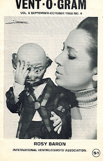

Special Issue
2/3/2012
{kind=link}

From a personal perspective, this Sept/Oct 1968 issue of Vent-O-Gram newsletter is special for a couple reasons. 1) I joined the IVA (International Ventriloquiust Assoiatinn) in the Fall of 1968, so this was the first issue I received. And, 2) with the issue was a small slip of paper advertising the Maher School of Ventriloquism for sale, and it was my response to that small ad that eventually led to our purchase of the Maher business.This issue also contains a report of Vent-O-Rama, held during the Summer of 1968 in conjunction with Abbott's annual Get-together in Colon, Michigan. That was the first I heard of Abbotts or the event itself, and back in that day when I read through the list of some of the 45 or so vents who gathered for Vent-O-Rama, I did not recognize a single name on the list. Now, as I again read the list, I know, and have actually met many, if not most from the list. What a difference 43+ years makes!
W.S. Berger, in his article, wrote a long paragraph about Teter and McDonald who appeared for two weeks in Cincinnati in 1968. They also visited Vent Haven during their time there, with Teter introducing Mr. Berger to the replica of President Johnson, a vent figure of his own creation. The public's immediate acceptance of the President Johnson figure was the beginning of Teter's long presidential-themed run, something those of you who attend this year's 2012 Vent Haven International Convention will enjoy, because Jim Teter will appear with at least some of his cast of honored guests. A rare treat!
This issue of Vent-O-Gram for sale: http://cgi.ebay.com/ws/eBayISAPI.dll?ViewItem&item=260948488771